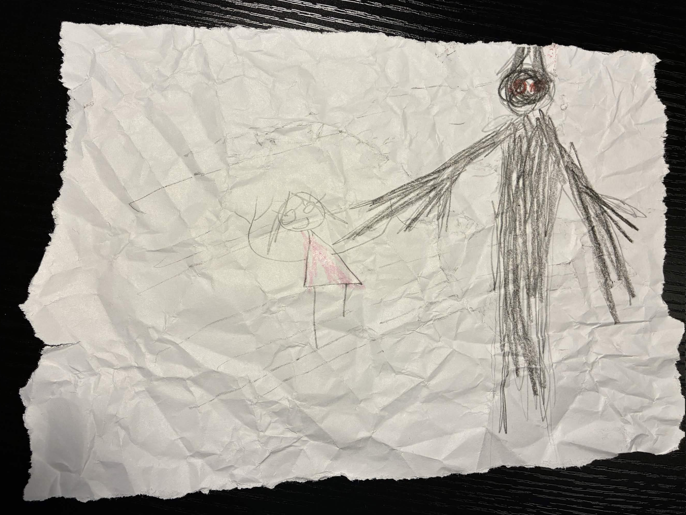

It's the winter of 12c, 1266. 10 years ago, the arctic northwestern civilization of Serendipita fractured in an unparalleled civil war. The northern tribes declared war against the Republic of Arcohaem, and formed the kingdom of Frigoshia. The induction of industrialization into the Republic threatened the ancient cultures of Arcohaem, cultures which the north believed they could protect through force. The Republic wanted to expand economically to give the people of Arcohaem safer (albeit different) lives.
10 years ago, Major Kragknull formed the Wolves of Arcohaem with a few of his fellow majors. They were one of many elite strike teams formed in the youthful Republic military. The Wolves were uniquely precise and chaotic, making them excellent for handling missions most armies couldn't. The original lineup was Thoren Kragknull, Finn Waters, Rorik Valgok, Vaesha, Arrius, and Rikkix.
Founding Members
Thoren Kragknull
He was promoted to Commander Kragknull, and placed in charge of the Wolves. It was his idea to form the team in the first place. He was a paladin, and a powerful one at that. He didn't really have many friends, or any remaining family members, so the Wolves were everything to him. His loyalties lie exclusively in what he knows, so he doesn't trust just about anything unfamiliar. Though a hardened man, he has a soft spot for his team. That passion helped him to continue running it with diligent care after he was promoted.
Finn Waters
Finn retired after his father's death, and went into politics as a senator in his place. He was a good friend of Lord Phenistor, who helped him kickstart his political career. He was a skilled scholar and diplomat. His personability made him valuable as the team's primary negotiator.
Rorik Valgok
He went missing a little under a year ago. He was a stubborn and pragmatic dwarf scholar who loved cheese. He was a valuable asset to the team. Unfortunately, he was hit by a shell and blasted into a pit. A squadron of ambushing Frigoshian troops forced the Wolves to leave him behind, where he most likely died.
Vaesha
She was a hotheaded pyromaniac and the predecessor to Lukas Havran. She died due to the premature detonation of a military explosive while attempting to collapse a fortress. She had only been on the team for a few months at that time. The explosive was accidentally detonated by one of the members of the team. They never confessed to it.
Arrius
He was an Aaracokra Fighter. He was a talented painter and was deeply sensitive. He was the team's unofficial medic for awhile, until he gave his life in Kedrik to save a family of Harrengon from a Frigoshian ambush.
Rikkix
He was their Thri-Kreen bard, and was only on the team for a year before he got lost in a blizzard and was never seen again. He was a happy and kind dude, and he kept people's spirits high. He was an entertainer at heart, but he wasn't very intelligent. Maybe that's why he got lost in the first place.
Modern Members
Darrell Honor's'swift
Darrel was only on the team for a month. He vanished in action a few weeks ago, likely due to his worsening schizophrenia. He got the job due to nepotism, and they weren't able to get a replacement in time.
Tinkle Winkler I (Formerly Robert G.)
A goodhearted man with a mind for business. He was a valuable strategist before a sailing accident damaged his skull and gave him severe brain damage. The trauma forced him to develop comfortable delusions of grandeur, in which he's a rich philanthropic noble named Tinkle Winkler. Now, he's relatively unintelligent, but he still has the political skill needed to further his new goal: recover Winkler Nation, which was "lost," and grow in power as a businessman and leader. He has been in the army for 7 years now. He hasn't been fully diagnosed by any doctors due to his insistence that he doesn't need a doctor. Even though he's not the same man he used to be, he's still a valued member of the team.
"Old Man" Olaf
Olaf is a mixed bag. On one hand, he loves animals, simple games, and vodka martinis. On the other, he is a compulsive liar, kleptomaniac, and murderer, with an extensive and horrible criminal record dating back very far before his induction into the military. He was raised to be a monk in a monastery in Kessek, but he was kicked out for repeated counts of theft, assault, and for chasing and terrorizing an Irish (?) boy and his family. After decades as a vagrant and wanted man, he was given the choice of life in prison or conscription. He chose to join the military, and his success as a killer and spy earned him a spot on the Wolves of Arcohaem. Recently, his old age has prompted severe cognitive decline. He lacks almost all morals, and is obsessed with his goal of finding and befriending a sentient animal. Nobody knows for sure who he is or what he's done. We don't even know if his name is even Olaf. What we do know is that he's one of the most dangerous men in the Republic.
Ostos "Ron" Bjornson
Ron was raised by a blunt and practical family of Goliaths in Hathor. They instilled in Ron a deep desire to provide practical care for others, and to strive to maintain strong relationships with friends and family. When his brother was involved in a lumber accident, Ron developed his abilities as a cleric and prevented him from losing his arm. That began a long medical career, which ultimately led to him joining the Republic military to protect people and contribute to stopping the cruelty of the Frigoshians. He was placed into the Wolves of Arcohaem as their primary medic, and has developed a close friendship with them since. Ron has an insatiable appetite, and will eat anything and everything, with the sole exception of tomatoes. Over time in the military, his altruism has degraded a little; he'll hurt people if he has to, and he's developed a deep hatred for elves. If not for Ron, however, the Wolves likely would've died countless times by now.
Iona Kunetzova (Formerly... Mira? Maybe?)
Iona was abandoned, and grew up stealing food on the streets of Hephaestus. A year after the civil war began, when he was 15, he was caught and placed in government housing under the care of Kezlov Kuntezova. He renamed him, valued him, and introduced him to letter writing as a form of therapy. Iona knew that when he was 18, he would be conscripted as a punishment for his criminal record, which left a constant feeling of dread throughout his childhood. Once that day came, he said goodbye to Kezlov, and was taken to Hephaestus to begin his training. He developed Vettilurgic abilities, which made him uniquely adaptable to the arctic environment, and earned him a spot on the Wolves of Arcohaem. He didn't choose most things about his life, so he hates when things are out of control. He still writes letters to nobody to vent how he truly feels without confronting people about it. He's naturally shy, but he's since warmed up to the Wolves, especially to Lukas Havran, who are like family to him.
Lukas Havran
Lukas was raised in a high-status household. He doesn't like to talk about his childhood. He left home to prove himself in the military. He lied about his age, and during his first battle, his entire battalion was wiped out by the Wraith. He barely managed to escape. He took the dagger the Wraith wielded to kill his commander, and finally developed his ether abilities. Over the next 5 years, he learned to control his powers and became one of the strongest funnelers in his entire bloodline. Now 25 years old, he's a member of the Wolves of Arcohaem, especially Iona. He's arrogant over his success, but composed on the battlefield. He's extremely loyal to the Wolves. He wants to prove himself to everyone, but probably most of all to himself.
5 weeks ago, the Wolves of Arcohaem were dispatched to locate Krothmire. Krothmire is a secret Frigoshian prison camp hidden deep in the eastern Howling Front (the unmoving line of combat between Frigoshia and the Republic). The war prisoners there are forced to work in forges, and kept barely alive. The cover of night coupled with a powerful snowstorm has given them an opportunity to approach the prison undetected.
They stormed the camp with reckless abandon. Lukas, Iona, Ron, and Tinkle Winkler tore through them like they were nothing. Olaf however, had a unique approach. He was attacked by two guards and talked them down. He told them he was a messenger from far away, who had news of their father. He sat them down to brace them for the news, and then pushed them off a cliff. It was the exact type of gambit Olaf would come to be known for. Besides that, the mission proceeded fairly simply. They freed the prisoners and were preparing to move on to the next prison camp.
But suddenly, Ron heard a loud beeping sound coming from his pocket. It was a communication beacon from home base, and it was transmitting an encoded message. To their shock, their ongoing mission they'd spent over a month on had been axed. The message read,
"EMERGENCY. BY ORDER OF THE CHANCELLOR, RETURN TO THE CAPITAL IMMEDIATELY. THIS IS A MATTER OF NATIONAL SECURITY. ONGOING MISSION NULLIFIED. - COMMANDER KRAGKNULL."
Confused, they packed their things and began escorting the freed prisoners home. After a week of travel, they returned to the capital of the Republic: Hephaestus. It was a beacon of industry and wealth. They were greeted and cheered on by fans, and a group of kids asked them to sign their Wolves of Arcohaem comic books. Lukas was brought to the comic store, where he saw a box of abandoned comics in the corner. Under some Karlstad Crusaders comics, he saw a single Captain Terrik issue, and was reminded of the tragedy that was Terrik Malvek. The war had gotten to him, and after his fiancé was shot, he went nuts and got caught with a bunch of drugs. He was attached to over a dozen murders, so he was convicted and executed. He was one of the greats, we just hope he'll be remembered that way.
On the other side of town, Olaf bought a bunch of poison, dynamite, truth serum, healing potions, and general adventuring supplies. He then returned to his standard Olaf activities, that being searching for furries and conning people who make *far* less money than him out of their hard-earned cash.
Ron and Iona passed a military parade being protested by a small crowd. They were ripping down government sponsored posters:
- "Where will you tell your kids you were during the war?"
- "What happens to them if you don't act fast enough?"
- "Don't fight for terrorism! Report Frigoshian activity."
- "Everyone's enlisted - what about you?"
- "Fight for the future."
- "Frigoshian? Or just a coward in fur?"
- "Frigoshia is fighting for squalor - don't let them win!"
After about an hour, they all met at the senate building to receive their next mission from Commander Kragknull. The structure loomed over everything else in the city; it was truly a beacon of brutalist architecture, and a symbol for the senate's remarkable power. They walked through stone-brick hallways with pristine red carpeting, and made their way up to Commander Kragknull's office. They passed senators and high-ranking soldiers, and felt the status of the building weighing them down as they entered Kragknull's office. It was decorated with twin statues of Chancellor Kaul, and has three large windows overlooking the city. Typically they wouldn't allow windows for security reasons, but Kragknull had specifically fought to get them in his office. He looked particularly stressed as he closed the blinds. He sat them down in front of a table and after exchanging hellos, laid out the situation.
"I've been a commander since the beginning of this war. Over that time, I've seen the Frigoshians sink to lows even I didn't think they'd cross. They fight and kill without mercy, or identity, or voice, all so that they can enforce their primitive lifestyle onto us. It confounds me why some of our own citizens go out of their way to protest this conflict like we're somehow at fault here. With all of that said, I didn't think anything they could do could surprise me... but this most recent development is so terrible that I've been sick with dread for the past week. Two weeks ago, a couple of soldiers were separated in the heat of battle and got lost wandering the eastern Howling Front. While wandering, they discovered a Frigoshian transport carrying incubation equipment, and... the first dragon egg we've seen in centuries. This has led the Senate to believe that Frigoshia is running a covert dragon breeding program, likely for military use. According to legend, a single adult dragon could decimate Hephaestus before we even got a chance to respond. We don't know how many they have, and our armies aren't even close to getting into the capital. So the Senate approved a secret mission to infiltrate Torhild, locate the program, and shut it down. To the senate's surprise, Chancellor Kaul personally selected you for this mission. I don't think I have to explain why that wasn't a popular decision. I believe you're more than capable for this mission, but your track record is inconsistent, so you'll need to step up. Like I said, your mission has three parts:
First, you need to infiltrate the capital of Frigoshia: Torhild. None of our armies have ever been able to push through the Howling Front, so you'll need to be clever when going through or around it.
Second, you need to locate the dragon breeding program. It's likely hidden within the Torhild. I have *no* reconnaissance beyond the Howling Front, so expect the worst. You need to be fast, quiet, and ready for a fight. Don't trust anyone there; even someone as young as 8 could be fully trained in Frigoshian combat.
Third, you need to destroy it, and eliminate any living dragons and eggs. It is of the utmost importance you don't miss any, because if even one is left, it could spell disaster for the Republic, and for all of Serendipita."
Together, they then planned their mission. They're going to travel to Ammalor and charter a ship, before sailing around the Howling Front and entering Frigoshia from as far north as they could get without hitting a blockade. They'll push through the wastes, before entering Torhild from the north to search for and eliminate the dragon program. Once that's done, they'll make their way home. This mission was far above their pay-grade, so they needed to be extra careful. All they could do is focus and try to get this done as professionally as possible, but we all know that isn't going to happen.
The Wolves moved from Hephaestus to Ammalor to search for a ship to charter. Ammalor is known far and wide for its artisans, trade, and craftsmanship. The ports are bustling, the shops are overflowing with merchandise, and the streets are lined with the rich and powerful.
Tinkle Winkler had stayed behind temporarily to help grow "Winkler Nation." He'd catch up with them in a few days.
Upon seeing the rich and powerful, Olaf immediately begins looking for easy marks. Over the course of the hour, while everyone else was preparing for the long journey ahead of them, Olaf made about 700gp with rigged cup games and elaborate cons. Ron was likewise distracted, managing to consume an ungodly 20 imported ambrosine fish tacos. If his stomach wasn't made of pure steel, this likely would've given him countless parasites and stomach issues.
Lukas and Iona pair off to look for a ship to take. Not wanting to endanger their crews or ships, most completely reject them. All but one; a sketchy captain named Marrek invites them in. He was an older man who'd clearly seen things they wouldn't've believed. He asked for an outrageous 1100gp to armor the ship against "volcanic activity." Apparently, something had been wiping out ships in the north. On top of that, they'd need to sail very near the northern blockade, which added a lot of extra risk for Marrek. He offered to take them to Freyrhage no questions asked, as long as they would agree to do the same. He argued he was the only one qualified and willing to take them that far north without being detected. Begrudgingly, they agreed, and paid him what he wanted.
Lukas was suspicious, though. Marrek wouldn't explain anything about himself or his business, but he'd clearly been involved in criminal activity. His code of "no questions both ways" was especially sketchy. Iona, Ron, and Tinkle Winkler trusted him right away. They could tell he wouldn't betray them given they obeyed his rules, so they piled on board his ship and left the Republic for what could be the final time.
That night, while sailing, they heard some splashing coming from the water. Large bubbles were surfacing around the ship. They definitely seemed organic, but Marrek claimed they were just the "volcanic activity" he'd spoken of. They then heard some splashing off the back side of the boat, which seemed to quiet the bubbling. Something had been thrown into the water.
Marrek retreated into his private quarters. Lukas wasn't buying it. With Olaf's help, they picked the lock and entered the restricted portion of the ship. In Marrek's office, they found a small lockbox under his desk. Inside was a rusted dagger with draconic emblems etched into it. Marrek caught them, but he wasn't mad. He explained that he found it while doing a job with an anonymous treasure hunter up north. The guy died getting his hands on it. That trip Marrek cost the tip of his middle finger just trying to get out alive. What fascinated Marrek so much about the dagger, was that it predated the founding of the tribes of Arcohaem, despite being far more intricate than anything around in that time. So, it was an impossible artifact. He never learned who made it, but the thought that there was always something more to discover kept him working, even in his old age.
Everyone but Lukas leaves him be. Lukas still isn't buying it, so he tries threatening him. Marrek yells that they had an arrangement not to ask any questions. Lukas berates him with questions and attempts to abuse his "authority" over Marrek, who responds by telling him that he may have paid him, but that wouldn't stop him from throwing him off the ship. Finally, Marrek snapped. As they docked in Freyrhage, he personally threw Lukas off the ship and vaguely insinuated that he'd "get what's coming to him." He didn't even flinch when Lukas tried to burn him in response. He went back aboard his ship and shut the door.
The port of Freyrhage used to be massive, but it was falling apart. A large third-party militia from out-of-country had moved in and occupied the town. They set up fences, patrols, and watchtowers all across the city. They saw that a Frigoshian flagpole had been torn down, and they put the situation together in their heads.
Freyrhage was only established some 35 years ago to capitalize off the port. When the war began, they were forced to unite with Frigoshia. They hired the militia to protect them and declared independence. The Wolves knew better than to believe that some private army would be enough to stop what's coming.
Iona was furious with Lukas' actions with Marrek. He very nearly sabotaged their entire mission! So, for the first time in awhile, Iona went off into the town by himself. The town was completely covered in improvised fortifications. While exploring, he saw a woman attempting to push an elderly woman in a wheelchair, but it'd gotten jammed. She was visibly exhausted, so Iona helped her. She introduced herself as Emily Persson, and her mother-in-law as Annette Persson. After talking for a bit, she invited Iona and the rest of the Wolves to join them for some roast duck.
Ron wasted no time; days of being on a ship with nothing but lightweight rations had made him hungrier than ever. He rushed into town, found a restaurant, and ordered the "Four Horsemeals of the Eggporkalypse," an absolutely heroic amount of food only 2 people had ever completed. Of course, it was no problem at all for Ron. He devoured it, and to get out of paying the bill, he crapped himself to intimidate the restaurant owner. It didn't work, so he ran out and met back up with Iona, who invited him to the dinner.
Olaf met Danny and Danielle Persson. Danielle was incredibly outgoing, and Danny was super shy. Olaf faked his death in front of them for the hell of it, but had his scammed ruined by Iona, who invited him to the dinner.
At the Persson house, Ron quickly bonded with Erik Persson. Erik was a slovenly but big-hearted father who communicated almost entirely through grunts. Their mutual love of food made them close quick. Olaf impressed Danny with his military stories. Lukas jokingly flirted with Emily Persson, and then met Danielle, who reminded him of his younger sister. Danielle gave Lukas her pop-up book, and had him read some of it to her. Notably, it had their name and address on it in case it ever got lost, since it was her most prized possession. Emily and Lukas talked about their family; they wanted to flee, but they couldn't afford it because of the outrageous fees and risks. Besides, they didn't know if Annette would survive the journey. They stressed that they trusted the military with their lives, but they always always *always* lock their doors at night... just in case. Iona accidentally got drunk and started dancing, which lightened the mood. Everyone got up and danced too, leading to the development of a close friendship, and to one of their most memorable nights in the military.
The following afternoon they said goodbye and got back on track. They moved west through the arctic plains. Iona, keen as ever, heard something in the distance. He looked around and spotted a black silhouette atop a cliff a few miles away. It wasn't doing anything, it was just... observing them. He pulled out his binoculars to get a closer look, but it was gone. He mentioned it to the group, and Lukas stopped talking.
After a couple hours of walking, they found themselves in a series of small icy ravines. They stumbled into a cliff and discovered a full Frigoshian battalion absolutely stocked with explosives, weapons, and well over 200 men. As they were taking it in, they were then ambushed by a Frigoshian soldier. He was just a scout, so they quickly overpowered him. He begged for mercy, so they tied him up and debated what to do with him. He talked about his family and how much they meant to him.
His name was Alric Grimvell, and his attitude was just a little bit off. He was very relaxed, he made jokes, and he didn't seem to be that afraid. He eyes didn't really emote like the rest of his face did, but that could just be a Frigoshian thing. He armor also seemed fancier than normal, which he claimed was because he'd been promoted to "squad leader." He said that he was forced into the military and that he wouldn't tell anyone. He also recognized the Havran family ring, which was not only an insane feat, but also an odd thing for him to even know about.
He says he'll reveal what is battalion is planning if they let him go. While he was talking to them, he was getting their names, how they got here, and what they've been up to. Ron was instantly suspicious and wanted to execute him. No one else wanted to resort to murder just yet, though, so they took his deal. He revealed that his battalion was going to wipe out Freyrhage for rebelling *tonight.* Then, they were going to move onto Mosegard and push through until they hit Lemnaeus. They're attacking at sunset, which is in a little over an hour.
Alric noticed the pop-up book Danielle gave Lukas. Thinking it was odd, he swiped it while giving them an appreciative hug. He then vanished unnaturally quickly.
They called commander Kragknull after the encounter. He was talking with Finn, so he said hello as well. Kragknull encouraged them to warn the town, declaring that nobody deserves to die, even if they were Frigoshian at one point. However, since they aren't associated with the Republic, it would be really foolish to risk their entire mission to save them. The moment they mentioned Alric, Kragknull starting acting funny. Something was wrong; Kragknull knew that name from somewhere, which meant that there was no way he was just a squad leader, and there's no way he'd be stupid enough to attack a squad of soldiers by himself. Then, Lukas goes through his things, and notices that the pop-up book was gone. The pop-up book that happened to contain the names and address of the Persson family.
The Wolves immediately panic and begin rushing back to the town. Ron used all of his teleports to chase after a trail of footprints in the snow, but to his dismay, they were dummy scouts Alric sent to distract them.
Once they got to the town, they found the front guard had been assaulted and dragged into the bushes, where his eyelids had been taken. He was dying and coughing up blood. He said somebody pretended to be lost and then stabbed him. He choked on his own blood and went unconscious before Ron could help him.
It was nearly sunset, meaning the battalion would be here soon. They couldn't save everyone, but maybe they could save the Perssons. To their horror, they found the front door open and their window smashed. They entered, and found the living room trashed, and Annette collapsed on the floor in a pool of blood. A single candlelight burns from behind the kitchen door. Ron heads outside to attempt to set up a sniping position through the window in case something goes down.
The kitchen had been stripped clean. A kettle was cooling on the stove, still making a low whistling. In the center of the room, Erik and Emily were tied to chairs and gagged. In the corner, Danny and Danielle were tied to each other. They were terrified, and kept looking to the backdoor. The darkness was so intense that they couldn't see anything through it.
Just then, they heard a voice say,
"Hey! I was wondering if you'd even show up!" Emerging from the darkness was Alric, holding a long silenced pistol to Emily's head, and sipping a cup of tea. He had a warm and wide smile across his face. "It seems you're already acquainted with the Perssons," he said, gesturing the the pop-up book, "Well... Danielle at least. I owe you an apology; I wasn't entirely honest with you earlier. I'm the captain of that battalion you saw earlier. My men spotted you coming and I figured I'd introduce myself to you fine people. Here's what I'm having trouble with: an *elite* Republic strike team, all alone, in Freyrhage of all places. I'm sorry but that just doesn't sit right with me!" He cocks the gun and presses it to Emily's head, causing her to push jump in horror and press her eyes shut. "Who are you, and what are you doing here? And don't try to stall. My men will be here soon." Olaf stumbled forward and said,
"We're here to sabotage enemy supply lines, nothing else." He looked at them and sighed with disappointment.
"You see, I just can't believe that. Why would they send you 5 on a sabotage mission? Maybe this is just me, and call me crazy, but if I were your commander, I'd have you doing something a little bit more important. So, I'm going to count down from five, and you're going to tell me what you're really here for." He sipped his tea, and began counting down. "5... 4... 3..."
"We're just here for sabotage! We swear!" Lukas and Iona repeatedly plead.
"2... 1..." He paused for a moment, before he shot Emily. The family screamed through their gags, and Erik attempted to break free to attack Alric.
"Let's try this again. Why are you here?" He moved the gun to Danielle. Seeing Emily go down, Ron fired a shot through the window at Alric, but he fatally missed. Alric stepped backwards and shot Danielle in response. Lukas screamed in rage and was held back by Iona. Alric next pointed the gun at Danny.
"I thought you were supposed to be a *civilized* society. Ironic isn't it?" He squats down and begins rubbing the head of a wide-eyed Danny. "Little Danny here doesn't want anyone to get hurt... does he?" He grabs his chin and forces him to nod no. "Danny wants him daddy to be ok. So, let's try this again. Why are you here? 5..."
"We're here because of the dragons!" Lukas screams. Iona, Ron, and Olaf look at him with horrified expressions on their faces.
"Dragons?" Alric looks genuinely confused.
"We intercepted a transport with dragon incubation equipment! We're here to find it and shut it down."
"If you're going to lie to me, you should really try a bit harder with your cover story."
"I'm being honest I swear!"
"No, you're not. I'm a captain of the Frigoshian military. If we were breeding dragons, don't you think I'd know about it?"
"What if you heard it from our commander?" Ron offers. Alric agreed, and they called him. Kragknull quickly figured out they were being interrogated and poorly lied to cover their tracks, which Alric saw through. While this was going on, Ron attempted to sneak Death Ward onto Erik, but got caught. Alric shot Danny, and moved on to Erik.
"For the best of the best, you are a shoddy strike team." Alric says, shaking his head.
"We told you everything we swear! You could tell Kragknull was lying, couldn't you?" Lukas pleaded.
"I don't believe you. I believe that *you* believe that's what your mission is, but once again, I haven't heard anything about that. So, and this is your final chance, what exactly were you told? I want names, and I want details. 5... 4... 3..." Before he could finish, Iona water bubbled him and knocked him prone. Alric fired at Erik, but he was saved by Ron's Death Ward.
They all immediately disarmed and restrained Alric. In a desperate attempt to preserve his life, he argued that he had information they'd want to know. So, they all kidnapped him and took him and Erik out of the town. As they were fleeing, they heard the town being bombarded and destroyed. The militia wasn't enough.
After hours of running in complete darkness, they made camp. They contacted Kragknull, who was infuriated that they'd revealed the mission to Alric. He suggested getting what they can from him and putting him down.
Olaf injected him with all of his truth serum. They intensely questioned him, and he revealed that he truly didn't know anything about the dragon program. He also revealed that he'd broadcast their conversation on an open channel, meaning there was a good chance someone overheard and knew they were coming. Erik shot him, Lukas burned him alive, and Iona dissolved him with acid. While dying, Alric smiled, enjoying the pain, and relishing their obliviousness.
They didn't sleep. A newfound unadulterated hatred for Frigoshia was boiling over inside of them. They would not make this kind of mistake again.
It had been a couple days since the incident with Alric. Erik was still travelling with them. They'd moved out of Freyrhage and into Beirdall. It was completely surrounded by water, and was easily accessible from Karlstad, making its western river a deeply contested territory in the front. It was the only time in their journey to Torhild where they'd likely encounter some battle.
At about 4 in the morning, the Wolves heard something in the woods.
These kinds of mechanical noises had been getting louder and closer every since Freyrhage. They were all paranoid, but it didn't seem pressing right now. Ron dealt with his stress by consuming 5 pounds of frostberries and 2.5 pounds of Tinkle Winkler's frostberry jam.
Speaking of which, Tinkle Winkler had finally caught up with them. He also sailed with Marrek, and they got along great. He'd also been mildly successful at growing Winkler nation. He got about 5-ish followers in Hephaestus. He snuck through the ruins of Freyrhage, past a Frigoshian encampment, and eventually found them. If not for the communicators, he likely wouldn't have been able to find them.
As they were walking, they encountered a group of orphans hiding out in the middle of the woods in a rudimentary fort. They were triplets, and they'd been living near here before their parents died in a skirmish. They're names were Boggis, Bunce, and Bean. One was short, one was fat, and one was lean.
Boggis quickly sided with Tinkle Winkler after learning about the glory of Winkler Nation. Bunce and Bean went back and forth between Lukas and Olaf, who both wanted to help care for them. Then, Lukas realized they were Frigoshian, and lit their hair on fire in what can only be describes as an outburst of racially motivated vengeance for the actions of Captain Alric. Lukas retreated to be by himself and looked through Danielle's pop-up book.
As they went further west, they began to hear gunfire. They found the beach of the river swarming with Republic soldiers. Frigoshia had sent a galleon up the river to attempt to destroy the Republic encampment. Just then, they spotted some friends they hadn't seen in ages: the Karlstad Crusaders!
The Crusaders are a contemporary of the Wolves of Arcohaem. They're much less popular, but just about as skilled. They served under Commander Ragnar for a few years, but have been around the Republic military elite since the beginning of the war. They're composed of four members:
The Karlstad Crusaders
Sigvald Brenn
A dragonborn paladin and the leader of the crusaders. He was a reasonable man who was loyal to his men. He'd grown up poor, but he'd managed to go to the same high school as Lukas due to his cousin's connections. After befriending Kragknull, he was introduced to Ragnar, and got a spot on his team.
Drek Halvos
A changeling fighter and rogue, and the spy of the group. He was a sadistic kleptomaniac who was only in the war for the money and the violence. While off-duty, he was really uncomfortable to be around unless you knew him really well. He was only conscripted after a violent incident at an Arcobee's got him imprisoned indefinitely.
Aska Taura
A minotaur barbarian, and the tank / cook of the group. She had a loud laugh, was super kind and warm, and loved food. She was also incredibly gullible and fairly stupid. Half of her belief system was built on obvious lies.
Karl "Oscar" Oskarby
A tortle cleric, and the medic / moral compass of the group. He was always very quiet. He loves Arcozona Iced Tea, writing, and painting. He really didn't want to be here, but was making the best of things with the Crusaders.
A barrage of cannon fire forced them to take cover. Over the next several hours, they worked together to defeat a small army of Frigoshian soldiers. Ron threw Olaf across the river, Tinkle Winkler protected Erik and the orphans, Lukas got his revenge by exploding the Frigoshian galleon, and Crusaders cleared the enemies out from the sidelines.
After the battle, a Frigoshian begged for mercy. They hesitated for a moment, but they wouldn't make the same mistake twice. Lukas killed him.
Strangely, they spotted a group of ~6 Frigoshians sprinting away from the battle after seeing the ship go down. They were too far away to catch, but they were running the same way the Wolves were going.
The sun was setting, so they had some time to relax with the Crusaders. Aska began making them food and talking about the stories she's heard. Some of the highlights included:
- "I met this guy who said he saw the Frigoshians drinking blood from the skull of a Chupacabra"
- "A soldier we captured once told us about a time his captain blew up a school with nothing but tree sap and spices"
- "One time a bunch of Frigoshians tried being friends with Republic soldiers, and the soldiers trusted them, and then when the soldiers went to be, they cut off their wangs! Can't trust 'em!"
Drek attempted to steal from Olaf, who promptly stole his stuff back from Drek. Karl and Iona shared some Arcozona Iced Tea while he tended to their wounds. Drek then walked around naked while Karl washed his clothes. Then, Sigvald and Aska got into an argument over whether or not the Wraith was real.
Sigvald and Commander Ragnar thought it was just a bunch of unrelated killings that had been fallaciously linked after the fact. Aska swore that she knew people who'd seen it. Lukas shared a little bit about what happened to his encampment, but they didn't believe him. Ron negotiates with Sigvald, and Sigvald agrees to take Erik and the Orphans back to Hephaestus. They say goodbye, and part ways.
As they're going to sleep, Kragknull called them. He sounded out of breath. "A bunch of crap just went down last night, and a bunch of people disappeared, including the overseer of the Republic bank. All of his files were burned or looted, so there's a lot of paranoia right now. The whole senate building is on lockdown and everyone is looking for the assailants. The Chancellor was so panicked that he personally elected a new Lord Commander to oversee the Royal Guard. He's from out of the government, so no one really knows him yet. It's some dude named Galen."
He then begins telling them of him and Finn's problem. They think they know who was responsible for the assassination, but if they're wrong, they could be executed. He's going to do something illegal to double-check. If he's wrong, he could be executed. Since they're getting close to Havbo, they're going to lose communication for awhile. He just wanted to say that he loves them, and he hopes their mission is a success and that they return safely. They're his favorite team he's ever worked with. Iona tells Kragknull that he loves him, and they all say goodbye.
It'd been a few days since Beirdall. They were now in the western wilderness of Havbo. It was about 10pm, and they were all lying around the campfire. They'd lost track of exactly where they were, but they knew they were getting close. They'd been a little distracted, though, since for the past several days they've been hearing those sounds in the woods getting closer and louder. It couldn't have been more than a mile away this time.
That coupled with the fact that they'd lost all contact with home base had made the past few days especially stressful. All of the Ether users also began to experience a low, dull pressure: like their ears needed to pop, or like there was a static buildup in the air. They weren't sure how, but it felt like their abilities were being tampered with more and more the closer they got to the capital. They attempted to use the radio, and this is what they heard:
The immediate theory was that the second transmission was coming from a train, but some of them thought it may have been some kind of march. The first transmission was much more ambiguous. Whatever was sending these signals prevented them from communicating with anyone, as Kragknull had warned.
Iona built an ice shield around their camp to protect them from any potential attackers, and Olaf began teaching a frog pattycake. Lukas and Ron began a routine night watch to ensure they weren't going to be caught off guard. Tinkle Winkler camouflaged himself outside in the snow and mud.
The fire slowly died down, and most everyone began to doze off. Lukas, the first on the night watch, heard a branch snap a few feet away, into the woods. His eyes snapped open. The pitch black darkness meant very little could be seen beyond blurry silhouettes. He squinted his eyes as they adjusted to the darkness. About 10ft back, behind the ice dome, and behind everyone, partially obscured by a tree, was a tall, stretched shape lurching back and forth. His blinked hard, and the figure was gone.
Inside the dome, Ron noticed a tall, slim shape in the middle of the camp where the campfire once was. He got closer and lit a torch to investigate. It was a head on a pike, missing its eyelids. The face was beaten, and locked in a melted, droopy, almost horrified expression. Below the head was a small, parchment note written in shoddy bloodied handwriting--akin to a child fingerpainting. The message was short and simple, "Tommy shouldn't play in the woods." He investigated the face, but it was bruised and bloodied to such an extreme degree that he couldn't identify age or gender; his best guess as a medical professional was that this was a very young boy--possibly 10-12 years old.

It was at this point they realized they hadn't seen that group of Frigoshians that ran ahead of them anywhere. They'd been moving in the same direction, but they'd somehow stayed ahead of them this whole time.
The party shot awake and began clamoring for answers. How did this get *inside* the dome without an entry or exit point? Who was on the pike? Why was this thing leaving messages for them? The vulnerability of their situation caused a creep of adrenaline that kept their red and stinging eyes forced awake. They decided the best course of action was to leave. Lukas attempted to use fly, but the staticky feeling from earlier returned, and all he did was create a large spray of red mist. Something was tampering with their abilities and keeping them from using any ether abilities to get away.
There was a town not a half-mile along the border of the woods they could camp at and potentially fortify. The reached the town of Arrah under the light of the full moon. It looked abandoned, possibly for decades. Their standard issue Republic flashlights cast thin, muted beams across the narrow forest path. There were next to no standing structures left, but there was a white wooden wall about 20-30ft to their right.
The lone wall was riddled with deep, violent claw marks, and splattered with a mist of blood. By the wall was the tail end of some deep red drag marks leading off into the woods. The only evidence of what was here prior was a severed leg in Frigoshian armor. The leg was completely ripped out of its socket, armor and all. Powerfully painted into the wall with the same bloody red as the parchment, was the message, "GO HOME WOLVES."
They began to argue about where to go next. Their mission so far had been to enter the capital from the north, since it's thinly guarded due to the harsh wilderness and gigantic mountain range. The way forward is protected by this forest, regardless of what direction they enter from. If they don't want to go through the woods, they could backtrack and attempt to enter Torhild from the south, which means going through the Howling Front, and through all of their primary defenses. There was good reason they wanted to avoid that. They could also listen to the writing on the wall and just go home.
Not wanting to risk the mission, they cautiously entered the forest of Arrah...
It was pitch black, and all that could be heard over the sounds of the forest was the crunch of snow under their feet. Tinkle, leading the formation, then stepped on something that didn't feel like snow. Looking down, he saw a severed Frigoshian head. Similar to the leg, it'd been completely ripped off by something very strong.
Suddenly, about ten meters ahead of them, they saw the dim flicker of light, and whispers. Lukas snuck forward to investigate and found not a monster, but a group of grievously wounded Frigoshian soldiers. None of them were wearing their helmets, but were instead tending to their wounds, pointing spears into the darkness, and scouring some old maps. Their commander turned around and spotted Lukas, he then let out a high-pitch screech, and yelled, "God dang it! What the he-don't do that to me man! God! You freaking scared me!"
Lukas prepared to firebolt the group, but the man--Major Ritva--began to break down the situation.
"Wait! We come in peace! Please, just listen to me first." He pleaded. Lukas paused, then lowered his guard to let the man speak.
"About twenty minutes ago, we were making camp in Arrah when we were ambushed. We couldn't hear it or see it until it was too late; it tore us apart in seconds. It's faster than you, it's stronger than you, and it's smarter than you. Our maps are outdated, but there's a cave system about a hundred meters north of here that cuts through the mountains and will get us out of the woods. We can escape this thing if we stick together! I know you're from the Republic, but there's safety in numbers, and if we split up, we'll all die. I'm willing to let bygones be bygones. I'm not saying I agree with you on anything, and I'm not guaranteeing anything once we make it through the pass, but I don't want my men to die, and I assume we at least have that much in common."
The rest of the party joined Lukas and began deliberating. Vetle paced back and forth, not wanting to waste any more of their already very limited time. They reluctantly decided to go with the Frigoshians and bolted deeper into the woods. As the ran, a piercing call cut through the eerie silence of the woods. It felt right behind them as they ran.
They arrived at a small clearing surrounding a bolted metal door with a bulletproof glass pane. The Frigoshians began rapidly unbolting the hatch, but years of icy rainfall had frozen it over. They began to panic and rapidly bang on the latch with their weapons.
The party assisted, and managed to remove most of the ice. The rest shattered, and the door slowly creaked halfway open. They clamored to get inside, but before they could, they heard one of the Frigoshians standing guard scream. Ron whipped his head around, only to see his body being dragged into the darkness by his feet. They rushed inside. BANG! BANG! BANG! All three of the locks on the door slam shut. The door was at least half a foot of solid steel.
Everyone else began to take huge relieved breaths to prepare to keep moving, but Ron peered out the dirty window to look for the Wraith. Muffled screams and gunshots got quieter and quieter, until nothing but silence remained. Ron got closer to the window, until BANG! The severed head of the Frigoshian guard smashed into the glass so hard that it left huge spiderwebbing cracks all throughout it. Seeing this, the rest of the Frigoshians stood and began to sprint away. Then, they finally saw him. The Wraith's beady red eyes and black horns emerged from the darkness and began to approach the door.
At this point, Iona rightly and angrily questioned Vetle on why the "cavern pass" he was discussing featured a gigantic bunker. Ritva yelled that his maps were outdated, and he didn't know it was going to be there. They all sprinted through the bunker anyways. They ran through a cracking tile hallway with dim red lights, and heard a loud crash behind them. Suddenly, the entire freaking vault door was thrown down the hall towards them, bashing Tinkle Winkler in the back of the head, and knocking him prone. The door lodged itself in the wall, and the sound of the Wraith's crashing footsteps thundered down the hallway. Tinkle Winkler got to his feet and they all continued running deeper and deeper into the structure...
Here are the important things that happened as they progressed through the bunker and evaded the Wraith:
SECTION A
- They went into a flooded hallway and the Wraith wouldn't follow them into the water for some reason.
- They found a frozen prison that had fresh Frigoshian corpses.
- They found the crew quarters, with a calendar going back to February 16th, 12c 1256. 10 years ago. Each Friday going back to the start of the war is marked with either green or red marker, denoting successes or failures.
- They found a locked brass door and decoded the Frigoshian cipher to progress. While in that control room, they reactivated the power and saw a monitor that displayed the static message, "Proto Left the Room."
- They climbed up the ladder shaft and threw a stick of dynamite at the Wraith, which did very little beyond buying them time.
SECTION B
- They went into the sewers and split up. Half the team went into a collapsed cistern, and the other went into the caves.
- In the caves, Lukas and Iona spotted something odd. The Wraith was gaining on them, but there was a hidden, man-made path leading even deeper into the caves. Lukas went for it and found a strange room. There's a bed, a broken lantern, and all manner of weapons. An older Republic flag was tucked away in the corner. Judging by the design, you'd say it was 12-15 years old. There's also a collection of children's drawings showing the Wraith holding hands with a little girl. Even further in was an elevator leading to somewhere *very* deep underground. A faint red glow came from below the surface. The elevator had been destroyed, and Lukas decided not to push his luck and ran back and rejoined the group, unable to decipher what was down there.
- Ron encountered the Wraith and noticed that it appeared to want the drawings back.
- They were attacked by a rope bridge, and if not for death ward, Ron would have died. Iona created an ice bridge and nearly fell down into the caverns.



SECTION C
- They entered a tall cylindrical room and saw the morning light beginning to shine.
- They entered a laboratory. A huge tangle of thick roots covered every surface. The organism was unlike anything they'd ever seen. It was a hybrid of some kind. It's mostly wood, but some of it is hairy and covered in red scales.
- They entered the Officer's Quarters. It was trashed, but there was a set of heavily redacted and damaged files labeled "Project Amalgamma."
- They entered a radio room. It's silent for a moment, and then a distorted voice said, "Proto left the room." It repeats over and over. It's a 15 second message that has been going for 14,726,666 iterations.
- They stole some old Frigoshian uniforms.
They broke through the exit door and ran outside. They completely collapsed the door behind them, buying them enough time for them to get away from the Wraith. They climbed into an old boat and went across the waters into Tjernfell.
Exhausted, they all collapsed. The only surviving member of the Frigoshian team was Vetle Ritva. Once they knew they were safe, he pulled out his pack and heated some stewed oilfish, which sounded disgusting. It ended up being pretty good, like 6.5/10. He talked about how he sometimes missed the time before the war. He still thought the Republic was horribly corrupt, but he understood why they'd dislike Frigoshia. He argued that they're all branches of the same tree, and not all of them are bad. He missed his men, and thanked them for sparing his life. He offered to give them a hand in return sometime in the future. He was gone in the morning.
After one more day of travel, they'd be in Frigoshia, and complete the first leg of their mission...
This was the final leg of their journey. After another day of travel, they'd reached Thall, the final barrier between the awful wastes that were the deep north, and the capital city of Torhild. The following day, they'd need to find some way to get over / through it.
Once inside, they'd need to be on high alert. Torhild is the absolute epitome of everything they've fought against on their entire journey. If they remember what they were told all the way back at the beginning of this: expect the worst, and trust no one.
They made camp. Tinkle Winkler gathered wood for a fire, Iona cooked up a delicious meal, and Olaf tried teaching his frog karate. It seemed to be too stupid, unfortunately.
Then, they reached out to Commander Kragknull. To their surprise, he wasn't who picked up the receiver.
"Hello. I'm sorry if I'm not who you were expecting. This is the Chancellor. I have some unfortunate news. Last week, your commander, Thoren Kragknull, stopped showing up to work. We figured he'd simply taken a sick day and forgot to call in or something. After a few more days, we realized something was wrong, so we sent some people to check on him. He wouldn't answer the door, so they had to force their way in. Once inside they found that Thoren had, umm... taken his own life. They called the police and it appears he'd been suffering from depression for quite some time. I guess no one picked up on any of the signs. I'm so sorry. I thought I'd be the one to tell you since me and Thoren were friends."
The Wolves were shocked. Lukas rightly asked, "what? What signs?!" but then they moved on.
"Thoren always believed you could handle this mission, that's part of why I endorsed you all to the Senate. Until we can find a replacement, I'm going to be personally overseeing your mission. I know it's harsh to move on like this, but time is short, and I need to know how your mission is going." Kaul said. Lukas talked about sparing Major Ritva, and Kaul got very upset with them. "You spared a Frigoshian? Do you have any idea how stupid that is? What if turns out to be another lunatic like that last guy? Of course, I'm all for helping people in need, but not enemies IN enemy territory WHILE you're in the middle of a SECRET MISSION! What are you, retarded?"
Iona said, "well... not all Frigoshians are bad. He wasn't."
"Yes. Yes they are all that bad! What are you talking about? That was so freaking stupid! God dang it guys! What else did you do?" Lukas then mentioned the Wraith. Kaul paused for a moment, before saying, "I'm a believer, but I've never heard of an encounter like that where someone actually survived. I'm impressed. Anyways, moving forwards as to what to do next. According to your Commander's old notes, there's an old pass you can take directly into Torhild that skips the whole trek over the mountains. His notes say, "The Frigoshian military used to use it for transport in and out of the capital before an avalanche buried it. There was a settlement there too. Local superstitions and general secrecy keep most people out, so you'll be entirely on your own in there. Plus, it'll save you a day or two of travel time." I'll have to show you the instructions because it's seriously well hidden."
They accepted the instructions. They were as follows:
-- MESSAGE INFO --
AT: 3:31 PM RST
ON: 02 19 1266
TO: 592 760 4710
FR: 927 111 0258
-- MESSAGE CONTENT --
- Follow the southern road until you reach the abandoned entrance to the town of Aurora.
- Walk west until you see a large pile of boulders.
- Roughly 40 paces north of that pile will be an unnatural looking mound of snow.
- Dig through the mound until you find a hatch.
- Enter the hatch, go down the stairs, and move through the tunnel.
- About halfway through the tunnel, look for a red mark on the right wall. It’s dangerous to explore new places.
- Below the mark should be a hidden trapdoor. Open it and follow the path.
- Once you hit a green door, flip open the panel, and power on the keypad. It’s an older design that takes multiple smaller codes to open. It’s an older design, so you may have to enter the code multiple times.
- Once you’re through, you should be able to walk up a flight of stairs, open the hatch from the bottom, and dig your way out and into the pass.
- From there, follow the road into Torhild.
-- 18 5 4 6 12 1 7 --
Tinkle Winkler asked Kaul how his people were doing. Kaul said he didn't really know and he didn't want to go check, because his time was too valuable for that. To his knowledge, really good. According to him, "those three orphans are fantastic spokespeople."
Ron was feeling awful. He'd taken something that belonged to the Wraith, and it had been so upset that it nearly killed him. He needed to make things right; he needed to apologize. Using his abilities, he reached out to the Wraith telepathically. He saw him tending to his drawings back in the bunker. He spoke, and the Wraith heard. He apologized and offered to be friends. The Wraith thought for a moment, sat up, paused, and then began shaking. He burst the door down and began dashing out of the bunker and towards the Wolves.
Lukas and Iona immediately saw Ron looking disturbed. They asked him what he'd done, and when they found out what he did, they immediately began packing up camp to start running. Ron felt it teleporting and getting closer. They had about an hour tops. They (evidently) weren't going to sleep tonight, as they could already hear it in the distance.
They followed the southern road until they reached the abandoned entrance to the town of Aurora. It took about a mile of running, but once they reached it, they went dead west until they hit the boulders. North of the boulders was, sure enough, an unnatural looking mound of snow. Iona cleared the snow, and they went down into the hatch. They ran down the stairs and through the tunnel until they came to a red mark on the north wall. It was the same strange red mark that had been on the Wraith's letter, and on Marrek's dagger. Tinkle Winkler thought it was a B for "escape."
Lukas noticed that there was a light on at the end of the tunnel, and curiosity got the best of him. He went to investigate and found an office with a single dangling lightbulb in it. On the desk was a yellowed piece of paper showing part of a... well it might be a machine; he couldn't really identify what he was looking at. He saw stitches and pipes, and references to other papers. It was clearly part of a larger design, but it might have been upside down or water damaged. This was far too little information to go off of. Lukas grabbed the papers and returned to the group, who'd gone down a hidden hatch beneath the red mark on the wall.
Through the hidden tunnel, they found a green door. They opened the panel, powered on the keypad, and began entering the code. It took 5 or 6 attempts to get it to open. They entered 18 5 4 6 12 1 7 again and again.
18 5 4 6 12 1 7
18 5 4 6 12 1 7
18 5 4 6 12 1 7
18 5 4 6 12 1 7
18 5 4 6 12 1 7
18 5 4 6 12 1 7
Finally it opened. What a hunk of junk! They went up the flight of stairs and cleared the snow. They were in the ruins of the town of Aurora. They would've stopped to investigate, but they didn't have time. The Wraith would be on them shortly. To progress, they'd need to go through a small tunnel that had footprints leading into it. They went in, and after a suspicious amount of walking, it just stops, and then goes dead right.
At the end of the tunnel was an ancient looking stone doorway that led into some kind of cavern temple. The structure was old; impossibly old. The tribes of Arcohaem were founded in like ~122, but this was much, much older. They entered the temple and found themselves in a room with a large pit.
Ron went west, then north, then up a flight of stairs, and then east into a room filled with pots. Inside the pots were 20 or so black and red rings. They were hot to the touch, made of an unidentifiable material, and seemed to do nothing. They had a modified version of animal friendship applied to them. It smelled like smoke and sulfur. The room also contained Mural #7. Ron took enough for each of them and put them in a sealed bag. He then went west, and entered a collection of bedrooms. They were looted years ago, and the ceiling was about to collapse. He managed to sneak by and found a bathroom, which contained Mural #6. He then exited the room, went south, then east, then north, then east, then south into a room filled with glowing green fungus. There was a chest by the south wall that he attempted to reach without stepping on the fungus, but he failed and took heavy damage from the acid and poison. The chest contained a key. He then went south to meet up with Tinkle Winkler.
Lukas went west, then north, then west again, and entered a room with a grate in the floor. It was darker than the other rooms, and had a number of raised tiles on the floor. Bones were scattered all throughout it. He quickly put it together in his head that the raised tiles were trapped, so he attempted to avoid them. Unfortunately, he wasn't paying attention and he immediately stepped on one. Spears shot out from the ground below and pierced him through the leg. Once they retracted, he was able to cure his wounds and keep moving. He managed to find Mural #5. When exiting, he activated the spears again, and got hit again. He then went north to meet up with Iona. After that, he went back down the stairs and used a key he got from Ron to open a previously locked door. Inside were a bunch of schizophrenic drawings on the walls. They showed a man, a red dragon, and a bunch of screaming faces. The room had 20 or so tripwires strung throughout it. The southwest corner of the room contained a mural. He used a spectral eye to examine Mural #1 more closely, and then he discovered a hidden wall with a chest. Wanting the loot, he tried to avoid the tripwires. He failed, and got hit by huge spinning blades that whipped up from the floor. He slid the wall back and found a Potion of Growth.
Iona went west, then north, then up a flight of stairs, then north, until he reached a tomb. There was a steel sarcophagus that was bolted shut with 6 steel locks. There was a curtained off area on the north end of the room, and Mural #3 on the west wall. The curtained off area contained a chest with a Circlet of Draconic Blasting in it. The Circlet fires a Scorching Ray once per day. Each ray deals 10ft of knockback. It was made with red dragon scales and etched with a triangular symbol. Lukas then met up with him, and they blasted the bolts off the sarcophagus, revealing an incredibly old and incredibly decayed corpse. It wasn't even mummified, suggesting this body was kept here more as a trophy than as a memorial. He then went south, east, and then north, into a room filled with roots, sand, and a weird door. The door was no older than 10 years, and he could hear someone sliding something on the other side of it. He walked forward and fell into some quicksand. After some struggle, he realized he could manipulate sand, and then he crawled out of it. He went east into a lab / library. He found a chest with White Dragon Scale Gauntlets, which he could use to freeze someone once per day. The lab contained a strange device covered in yellow paste. It was pulsing with red energy, and seems to have been brought here more recently than anything else. Iona put gloves on and swept the top of it, causing it to explode the entire lab and nearly kill him.
Tinkle Winkler went west and discovered a fake wall with a potion of invisibility in it. He then returned to the entrance and went east and discovered an axe trap in the floor. He experimented with it using some sticks he found, and then attempted to avoid it. Unfortunately, he stumbled into another pressure plate he didn't see coming and got hit incredibly hard by the swinging axe. He went east, then south into an armory. It was filled with ruined armor stands, weapon racks, and crates. There was a chest in the corner of the room that appeared newer than the others. He failed to notice the wires coming off it, and when it opened, it detonated, nearly killing him. He did manage to acquire the key from it though, so that's a plus. Ron ran over and cured him, and together they went south, and then east into a fountain room that contained Mural #8. Around this time, they all heard thunderous banging coming from outside the temple, supposedly from the Wraith. It'd found them, but couldn't get underground. After about 25 minutes of relentless attacking, it stopped.
Olaf went east and immediately triggered the axe trap, but he effortlessly dodged it. He found a locked door, so he backtracked and went back south, then east, then north into a guard post. There, he found several primitively desks and weapons, a chest, a statue, and Mural #4. The chest contained a key. He touched the statue and it grabbed him. It attempted to steal spin slots from him, but he didn't have any, so it just hurt him. He went back to the locked door, again effortlessly dodging the axe trap, and entered a flooded room. He noticed some holes in the north wall, and a chest on the east wall. Wanting to test if it was safe, he tossed his turtle towards the chest. The motion triggered a dart trap and his turtle was hit with a volley of darts and died. Olaf went into the water to avoid the dart trap, and then opened the chest. He found an unlabeled bottle with three doses of... something. He went east out of that room and found what used to be a den of some kind. There was unnatural lava rock, croch marks, and huge gashes in the ground. Looking around for oddities, Olaf found a false wall and went east, then south, into a room filled with bones. The room contained Mural #2, and a chest with the Ring of Truth. Twice per day, it can be used to check if someone said something that contained dishonest elements. He then went south into a prison and found a Red Dragontooth Dagger, and he disarmed the security system.
They all reconvened at the roots room, and compiled their knowledge from the murals to find the code to the door.
Mural 1
The mural had been hastily scribbled over, but you could still make out the main details. It was a 3-part story: there was some kind of cataclysm, everything was destroyed, and society reverted to a primal state.
Mural 2
This mural showed a legion of dragons enslaving mankind and forcing them to mine and process metals. The queen of the dragons was Tiamat, a dragon with 5 multicolored heads. Interestingly, some of the men were wearing purple cloaks, and didn't appear to be enslaved like the rest of humanity.
Mural 3
The mural showed a man with short dark hair accompanied by his wife with blonde hair, charging into battle against an army of purple soldiers. The purple soldiers were led by an armored red dragon. The inscription read, "Malfaust the Red resists the Contradraconic Genocide"
Mural 4
This mural showed a man with long blonde hair. He was holding the head of a man with short dark hair, proudly standing atop a pile of multicolored dragon heads. He was in a smoldering battlefield, but they thought they could recognize Thall in the background.
Mural 5
This mural was specifically destroyed. Why this one?
Mural 6
The mural showed men in purple cloaks shaking hands with a man with long blonde hair. An early prototype of the Arcohaem flag was flying in the background. A splatter of dried blood coated the mural. The inscription read, "Theon allies the tribes; the death of piety."
Mural 7
This mural showed an old man with thinning blond hair founding Hephaestus. A group of some 50+ royals were around him under the Arcohaemian flag. The inscription read, "Hephaestus oversees the tribes of Arcohaem."
Mural 8
The wall the mural was carved into looks like it was hit by something incredibly powerful. The entire center was destroyed, leaving spiderwebbing cracks all throughout it. It showed a volcanic cavern deep beneath Arcohaem.
Assembling the codes from all 8 murals in order, they got the numbers 23, 1, 18, 9, 14, 5, 19, and 19. The door accepted 8 numbers with inputs ranging from 1-26, just like the other door from earlier, which was weird. The sound from the other side stopped. They entered the code and the door opened. A bunch of sparks flew everywhere when it did.
There were a bunch of drag marks and wires on the other side of the door, leading to a short hallway. Once they all got in, the door sealed shut behind them, and the front door opened. They heard a door far away open like 10 seconds later, followed by short, low beeping. They cautiously stepped forward into the next room. It was a huge cavern with high walls, and a few temple like structures inside of it. In the center of the room, and the source of the beeping, was a gigantic pile of bombs wired together! There were countless more bombs all throughout the cavern too! It's a trap!
Iona produced an ice wall, Ron dove behind a guardian he constructed, Lukas turned to flame to absorb the explosion, and Tinkle Winkler and Olaf hid in the hallway. The blast knocked them all down and nearly killed them. Ron brought them back as much as he could, but everything was on fire and the temple was collapsing. Rubble was falling on them, and they sprinted out. Lukas nearly died falling into a pit, and they were regularly roadblocked by falling debris. Ron and Iona worked together to create a temporary ice bridge to cross a huge gap. Right as they were about to escape, they saw a man on the other side of the door ripping wires out of it. He wasn't wearing Frigoshian armor or anything. He saw them and began panicking and tearing them out faster. He sealed the door with them still inside. They blasted the door down and chased after him, but he was gone; he ran into the city.
They made camp. They hadn't slept in over 24 hours. Ron checked the Wraith's location. It was back at the bunker, so they felt comfortable to fall asleep. Part of them didn't want to fall asleep out of fear, but they were so exhausted that it didn't matter. Maybe it was the rude way Kaul treated them, or Kragknull's shocking suicide, or the trap, or something else, but they were not in good mental states when they fell asleep. Each of them had very strange and surreal nightmares.
Lukas Havran
Lukas wakes up to find himself in his old encampment. It's been 10 years since the ambush. He climbs out of his old cot and looks around. The sun is rising, people are running to their duties, and orders are being barked over the PA system. Suddenly, bright strobing text begins to flash in his eyes.
SAVE THEM.
SAVE THEM.
SAVE THEM.
Lukas has run this scenario through his head god-knows how many times. Was it really that day again? Lukas falls out of bed and dashes out of his quarters. He yells,
"Something is coming! Something is coming! We have to get out of here!" He screams at people to listen, but it's as if he isn't even there. Again, text flashes intensely in his eyeline:
SAVE THEM.
SAVE THEM.
SAVE THEM.
Desperate, Lukas runs to the mess hall and searches for his old commander. He sees him eating breakfast at a table in the back. Lukas pushes through the crowded cafeteria and runs over to his commander's table. Lukas grabs him by the shoulders and yells, "We don't have very much time! we need to leave before it gets here! It'll kill us all! We can't be here!" The call of the Wraith sounds in the distance, and his commander turns to face him.
"Lukas? Everything is fine! Quit your whining! You're still on duty for the north-east watchman position." He says.
"Did you not hear what I just said? People are going to get hurt!" Lukas is sweating profusely, and trying to shake some sense into his commander. He pushes Lukas' hands from his shoulders.
"Are you feeling well? You're not normally like this."
"No! No! No! Please! Listen to me! You need to get everyone out of here; it's going to be here soon! You don't understand" A phone starts ringing in the distance, quieting the cafeteria.
"Get off me! You rich kids think you're so entitled to attention just because of how you were raised. You think a couple of missions makes you entitled to give *me* orders?" Lukas is speechless." You always were so lazy, Lukas. Maybe next time, you'll try a little bit harder to save us. I'm sorry, I need to take this." The commander leaves to take the phone call. Lukas is confused and upset. Something is wrong! He breathes heavily through his nose and furrows his brow. His heart pounds and his stomach drops. Tears begin to well up in his eyes.
LAZY
LAZY
LAZY
Lukas begins to hyperventilate. "Please, someone! Listen to me! We need to go now!" Lukas cries out. A few people look at him like he's insane. He searches for some way to get people's attention, and his eyes meet another man at the end of the busy hall. He doesn't recognize him, and he isn't wearing a military outfit. It's something almost... regal. The man is starting at him with quiet frustration. It looks as if he's trying to remember him, but he can't, or he's searching for something to say, but the words keep escaping him.
"Something..." the man says. In his head, Lukas hears mechanical growl of the Wraith growing louder and louder, closer and closer. "Something is wrong!"
SOMETHING IS WRONG.
SOMETHING IS WRONG.
SOMETHING IS WRONG.
The words flash across Lukas' vision. The man searches for words, and Lukas approaches. In the distance, he hears the sound of metal clashing and the cries of wounded men. "It's here, isn't it? It happened again, didn't it?" the man says. He turns to run, but the man grabs hold of him. "Something is wrong with you, Lukas! How could you have let all of this happen? How selfish could you be?" Lukas pleads with him to let go, but he just holds on tighter, his grip bending the metal of his armor and forcing him to the ground.
The humming grows louder and louder and louder and louder and louder and louder and louder.
He clutches his head and falls to the floor in agony. Suddenly, he hears the hiss of a can opening as if it were right in his ear and is violently jolted awake.
Iona Kunetzova
Iona is back in his bedroom at Kezlov's house. Any day now and he'd be taken away. The thought of military service always loomed over his head. It's the middle of the night, and he's tucked into bed. It's completely quiet. Not even wind or crickets interrupt the overwhelming silence. Looking around, Iona notices that his room is missing its usual windows and doors. There's a small square opening in the wall where the window was, but it leads out into a white hallway.
shfftt
Something moves under his bed.
It's quiet and fast. He wouldn't have heard it if it weren't so unnaturally silent in his room. He pauses for a moment and thinks of what might happen. He doesn't move or make any noise. He holds his breath. His eyes widen at the thought of what could have made that noise. Iona tries to picture it, and his perception shifts to beneath the bed. He's out of his body, watching this unfold.
...
There's a hole under his bed. What could be down there?
...
Nothing, not training, not therapy, not anything on earth, nor anything above, could have prepared him for a billionth of what he had just experienced. It was deep, deep below the earth, but it was getting closer. It was a shifting colorless mass of teeth and pale faces painted with red streaks. The way it undulated and violently shook as it climbed up made Iona recall the time he saw a bear dragging a wounded deer into a cave. The half-second he saw it was so overwhelming to his mind that his nose and ears began to bleed. It was as if it possessed his perception and used it to attack his mind and body. For a moment, he experienced a surge of incomprehensible emotions and felt all 5 senses screaming for help. It was getting faster, and would be here in a few seconds.
Iona rushes out of bed and calls for Kezlov's help, but nobody responds. He crawls through the opening in the wall and begins running down the hallway. It leads through a featureless, white complex of stairwells, doors, and hallways. With every step he takes, he can feel blood dripping from his nose onto the floor, and the sound of the creature chasing after him. He sprints down multiple flights of stairs, randomly navigating through the endless structure. Finally, he reaches the bottom, and the walls are covered in blood. He turns around, but the door he entered through is gone.
The one feature of the room is a clock with lips and lidless eyes.
"Iona? You aren't supposed to leave your room, silly!" said the clock.
"Kezlov?" Iona stares at the face of the clock.
"I'm fine, Iona. Don't worry about it! This is just what's supposed to happen. There's nothing any of us can do to stop it now." Iona feels things spiraling beyond his control once again, and it fills him with a panicked sense of determination to prove them wrong. He hears the creature moving down the stairwells, so he begins bashing at the walls to make his own way out. With every hit, he turns around to check if the creature is here yet. "There's nothing you can do! It's ok, Iona. Just let it happen." the clock says. The walls don't even dent from his strikes.
"No!" Iona screams, looking behind him again. It's almost here, and its causing his eyes to start bleeding. It feels like a bunch of spikes are being rammed through his eyes and out the back of his skull. He collapses to the ground, and hears the sound of a pipe bursting and the hiss of steam. His body clenches, and his eyes shoot open.
Ron Bjornson
DISCLAIMER
I, Aiden Warren, am not a musician, nor am I skilled at audio mixing. The instruments don't mesh super well and are kinda loud. The important thing is the lyrics.
DREAM
Ron wakes up on the set of a children's show. Everything around him is made of foam, but he's in a kitchen filled with food. It's a dream come true! There are children in the audience, all of whom are wearing blindfolds. Two costumed characters walk in from behind set. One is dressed as a taco, and the other a tomato (gross). They quiet the children. The taco begins to speak,
"Ok, kids! Today we have a very special guest! You've read about him in our amazing comic books, you've heard talk of his heroism, and you've seen him with his team the Wolves of Arcohaem. Ladies and gentlemen, Ron Bjornson!" Ron walks forward onto the stage to roaring applause. The taco continues, "Today, we're going to learn about Ron's life! Are you ready?" The kids scream even louder. "Ok! Here we go!" A dreamlike piano riff plays as the set turns into a puppet show. The taco begins to sing:
Oh, little Ron
Oh, little Ron
He has a
Heart of gold
So we're told
Won't be long
Keep your hold
Oh, little Ron
Oh, little Ron
Republic
Saves the day
Come what may
Take the lead
Lead the way
The puppet show becomes an elaborate retelling of his life. It shows him saving Leif and joining the Republic to save lives. While this is happening, two conveyor belts emerge from the ground. One carries sick people for Ron to save, and the other carries plate after plate of food. Is this heaven?
'Cause you know he had to go
Leave his parents all alone
Cause he knows that they'll be
A-OK
Other days
Nothing's wrong
Stay away
If only they could see him now
I wonder if they'd feel as proud
If they could
See him fight
Saving lives
For the grand
Senate's light
The puppet show shifts to show him in the army and then with the Wolves of Arcohaem. It shows all his fallen comrades, all the people he's saved, and all the Frigoshians he's defeated. The conveyor belts start getting fuzzy in his mind. Something is off about the people he's saving, and the plates of food start looking progressively redder, but he can't make out what's on them.
Ron looks around. He's in some kind of building, but he can't see any exits, and everything is dark beyond the audience. He also faintly hears orders and yelling from behind the stage. The tomato begins rubbing his shoulders. Ron is uncomfortable with this, so he tries eating more of the blurry food. It begins to take shape in his mind, and he realizes it's nothing but tomatoes! Ron's stomach turns. He looks back to the man in the tomato suit.
"I don't want to eat this. Can I have something else?" The music stops, and everyone goes silent. They all turn to him with horrified expressions on their faces. Then, a towering, heavy-set shirtless man walks out from behind the set. He's balding and covered with body hair. He looms over Ron and yells,
"You don't say that! You never say that! How selfish are you?" He pushes his finger into Ron's chest. "We're all making sacrifices, and you can't stomach a few tomatoes? Do you know what I gave up to be here today?" He forcefully points to the belt of wounded people. "All these people are going to die if you don't save them, Ron." Ron pauses, and apologizes. Ron asks,
"What can I do to help?" Ron asks. The tomato circles back behind him and begins touching him again.
"Eat the tomatoes." the man forcefully replies.
"Why do I have to eat *them* specifically? I don't like tomatoes," Ron says. Strangely, the man laughs at this and looks confused.
"You don't? But Ron, you've always LOVED tomatoes. Every time I saw you at the mess hall you'd be piling them onto your lunch tray like we were running out!" He says, chuckling.
"No, I didn't? What are you talking about? I'll eat pretty much anything, but that's specifically the one thing I don't eat. This is a very well-known thing about me!"
"Ron, I really don't think you're feeling well. Look. I can prove it. Take a seat, and watch this." The man shrinks back behind the set. Ron sits down in a wooden rocking chair, and the puppet show reels back to life, showing him as a kid eating a handful of meals. A new song begins to play, now sung by the tomato:
It's not new
You knew it too
Well to say
that it's somehow
Gone away
Every day you'd
Fill your tray
Every way
Oh no, Ron
Oh, are you feeling
Well my boy
I'm worried for you
Please don't think
You're crazy but you
Always loved to eat tomatoes
They all turn to him with huge smiles on their faces as if that were definitive proof he loved tomatoes as a kid, and wasn't just a worse retelling of what he'd just said. The man, the taco, and the tomato continue touching and rubbing his arms. They stare at him awaiting a response, but Ron is speechless.
"What? What the hell is going on? What are you talking about? Not a word of that was true! Who are you people? I haven't met any of you before in my life! Get off me!" Ron tries to stand up, but if forced down into his chair by the tomato. The taco grabs a tomato and tries giddily forcing it into Ron's mouth. Ron resists and then bites the taco's hand. The taco curses and holds his hand in pain, and the others look furious with Ron.
"Ungrateful rat!" the taco barks through gritted teeth, before slapping him across the face.
"Kids, what do we think of Ron's attitude?" The tomato asks. The kids boo him relentlessly. Ron tries getting up again, but they all begin restraining him to the chair. The more Ron struggles the more they smile. They begin tying him down and giggling.
Ron begins hyperventilating at the thought of what was about to happen. His heart pounds, his vision narrows, and his stomach drops. All the mascots are touching him so much he can barely see anything. The man dons a chef's hat and begins loading Frigoshian body parts and tomatoes onto his plate. They're all trying to force feed him, but he keeps resisting. He's covered in grease and his body is disgusting and fattened. What happened to him?!
The taco and the tomato restart the music together this time.
Oh, little Ron
Oh, little Ron
He had a
Heart of gold
So he's told
Wasn't long
Lost his hold
Oh, little Ron
Oh, little Ron
Republic
Saved the day
Heard him pray
Took the lead
Led astray
All the mascots applaud and scream at him. Ron begins thrashing in the chair as they bring in a large metal pipe connected to a slurry of blended Frigoshian bodies and tomatoes. He feels fragments of bone cut at his throat as they're pumped down into his stomach. He retches and clenches his fists in agony.
Oh!
O-oh no
He tried his best
This-
This is what happens
To good men
Who forget
Who they've been
But
We see him now
We feel so proud
When we all
See him fight
Saving lives
For the grand
Senate's might
Oh no...
Fireworks and confetti begin detonating on stage, lighting everything on fire. Gunfire and bullets begin destroying the set, and a stray bullet pierces him through the stomach. The taco, the tomato, and the man are riddled with bullets and collapse on the floor.
Suddenly, cutting through the ending of the song is the deafening sound of a snake hissing. Ron jolts awake and vomits all over his sleeping pad.
Tinkle Winkler
Robert wakes up in a hospital bed. To his right are flowers, to his left is his old comrade Rorik passed out in the hospital chair. Robert tries to get up, but he's too weak. His head is throbbing, and everything in his vision is fuzzy. He dryly asks for help, and the doctor comes in.
"Oh? Is something wrong?" The doctor says, appearing to his right.
"My head... where am I?"
"You're in the hospital. You were involved in a sailing accident. You were hit by a loose anchor."
"Help... please..."
"What?" The doctor grins and tilts his head in confusion at the thought of it.
"Please... I need help."
"No, you don't!"
"What?"
"You don't want help!"
"I don't?"
"Of course not!" The doctor can barely get the words out without chuckling to himself. Robert is confused. Or is his name... wait. He can't remember. The doctor stares at him and shakes his head, still laughing to himself about what he asked.
"Why am I here if I don't want help?" Tinkle asks.
"Don't worry about it. Someone is coming to give you what you really want."
"What does he... or... do I want?"
"You don't want to know that, silly!"
"I don't?"
"Of course not!" Once again, the doctor laughs at the very notion of the question. He shakes his head and walks out. He closes the door behind him. There's a blurred window in his room that points into the hallway outside. He sees the doctor yelling at someone in a military uniform.
"Hello." a voice whispers. He turns to his left to find a man in a purple robe kneeling besides his bed. Rorik has vanished, and they're completely alone.
"Who... who are you?" Tinkle dizzily asks.
"I'm sorry?" The man says, tilting his head in confusion.
"Who are you?!"
...
"You really shouldn't ask people something like that."
"Their name? I shouldn't ask their name?"
"You don't want to know that, silly! A better question would be, am I even in the room with you at all? Delusions can be an awful thing to handle, can't they?"
"I want the nurse. Go away!"
"But Tinkle Winkler..." He leans closer. "You don't want me to go."
"I... what? Yes... I don't..."
"If you take that medicine, it'll make you crazy! You need me here. You're so silly! Silly! Silly! Silly! Silly! Silly!" The man smiles at him, his words breaking down and losing their meaning more and more until they become nothing but sound.
"SSSSSSSSSSSSSSSSSSSSS"
Tinkle Winkler snaps awake.
Old Man Olaf
Olaf looks around. He's back in the temple where he was raised. A group of monks barge through the door.
"Did you rob AND assault a child AND his entire family last night? What on earth is wrong with you?!" the monks say.
"I didn't rob anyone. All I was trying to do is terrorize the boy. If that's a crime, then lock me up."
"It is a crime, and we will! You're in so much trouble Olaf." The room begins to fill with darkness. Red thunder rolls in as the Monks distort and become monstrous in appearance.
"What? I don't want to be punished." Olaf shoves the Monks out the window and they fall off a cliff and explode and die. It then occurs to Olaf that he can do whatever he wants, because he's clearly asleep. He summons a giant turtle and flies off into the sky. He travels farther and farther up, until he's among the stars, then past them. He flies further and further away until he's at the edge of everything. There, Olaf finally finds what he was looking for.
Towering above him is the red baby-like creature he once saw in a vision. He doesn't know its name, its nature, or its intentions. All he knows is that it's really cool. Olaf offers a game of patty-cake, and quickly befriends the creature. Is this the greatest day of his life?
Right as the dream is getting good, Olaf hears a whistling sound and wakes up.
How unfortunate.
Awakening
Ron's dream was a product of his conscience recognizing that at some point after joining the military, he changed as a person. It's not saying that's better or worse, it's just saying that he's different.
Lukas' dream was about his insecurity and the lack of respect that people show him. This could be a product of the way his family treated him, but he sometimes feels like no matter what he does, he isn't doing enough, and he isn't good enough to be respected, even if it's irrational.
Tinkle Winkler's dream was about his accident and his confusion. Sometimes, he fears that he doesn't know what's going on anymore. He's aware he had a brain injury but he doesn't know what's real or not. He worries something bad is happening that he can't understand, and that if he takes his medicine, he'll be admitting that he's crazy.
Iona's dream was a little bit more ambiguous. It was about the anxiety he feels when things are happening beyond his control, and about the looming danger military service posed when he was younger. He always feels like something that he can't stop or understand is getting closer and that there's nothing he can do about it.
Because of Olaf's unique sense of morality, (or lack thereof) the same cognitive conditions didn't result in a nightmare. He recognized that the monks didn't like what he was doing so he killed them and moved on. He did whatever he wanted and no one could stop him.
All of the dreams had similar elements related to morality and independence. These were most likely brought on by Kragknull's death. But, there's more to them that'll have to wait until the next chapter...